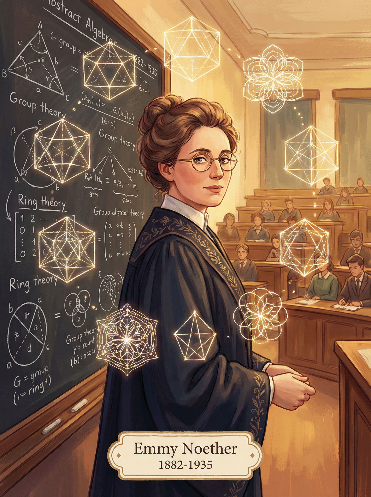
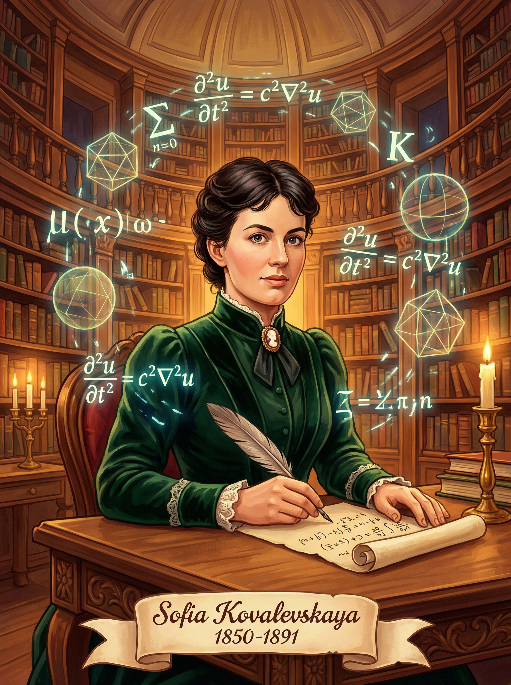

🧮 Mujeres en Matemática
Genias que desafiaron los límites de la ciencia matemática
Introducción
La matemática ha sido históricamente un campo dominado por hombres, pero muchas mujeres extraordinarias han hecho contribuciones revolucionarias. Desde Emmy Noether y sus teoremas fundamentales, hasta Katherine Johnson y sus cálculos cruciales para la carrera espacial, estas matemáticas han dejado un legado imperecedero.
Emmy Noether (1882–1935)

Madre del Álgebra Moderna
- Nació en Erlangen, Alemania en 1882
- Revolucionó el álgebra abstracta
- Desarrolló el Teorema de Noether
- Trabajó en la Universidad de Gotinga
- Fue perseguida por el régimen nazi
- Emigró a Estados Unidos en 1933
El Teorema de Noether
Su teorema más famoso establece una conexión profunda entre simetrías y leyes de conservación en física. Albert Einstein la llamó "el genio matemático más significativo producido desde que comenzó la educación superior de las mujeres".
🎧 Escucha: Explicación del Teorema de Noether
Sofía Kovalévskaya (1850–1891)
Primera Doctora en Matemáticas
- Primera mujer en obtener un doctorado en matemáticas
- Nació en San Petersburgo, Rusia
- Trabajó en análisis matemático y mecánica
- Ganó el Premio Bordin de la Academia Francesa
- Fue novelista y periodista además de matemática
- Murió a los 41 años de neumonía
Contribuciones Principales
Sofía hizo contribuciones significativas en ecuaciones diferenciales parciales y mecánica. Su trabajo sobre la rotación de un cuerpo rígido alrededor de un punto fijo es considerado fundamental en la física matemática moderna.

Video: La Vida de Sofía Kovalévskaya
Katherine Johnson (1918–2020)

Heroína de la Carrera Espacial
- Nació en Virginia, Estados Unidos en 1918
- Trabajó para la NASA durante la carrera espacial
- Sus cálculos fueron cruciales para el Apolo 11
- Fue una de las primeras mujeres negras en la NASA
- Recibió la Medalla Presidencial de la Libertad en 2015
- Su historia fue llevada al cine en "Figuras Ocultas"
Impacto en la Carrera Espacial
Katherine Johnson realizó cálculos matemáticos precisos que fueron fundamentales para las misiones espaciales de la NASA. Su trabajo en trayectorias orbitales fue tan preciso que los astronautas confiaban en sus números incluso después de que se implementaron computadoras.
Frase Inspiradora
"Somos todos humanos y merecemos el respeto. Hice mi trabajo y lo hice bien."
Comparativa de Contribuciones
| Nombre | Período | Especialidad | Logro Principal |
|---|---|---|---|
| Emmy Noether | 1882–1935 | Álgebra Abstracta | Teorema de Noether |
| Sofía Kovalévskaya | 1850–1891 | Análisis Matemático | Primera Doctora en Matemáticas |
| Katherine Johnson | 1918–2020 | Matemática Computacional | Cálculos para la NASA |
Impacto en la Ciencia Moderna
Lecciones para Hoy
Estas matemáticas extraordinarias nos enseñan que la inteligencia y la determinación no tienen género. A pesar de enfrentar discriminación y barreras sistémicas, lograron hacer contribuciones que siguen siendo fundamentales en la ciencia moderna. Sus historias nos motivan a perseguir nuestras pasiones en matemáticas y ciencias, sin importar los obstáculos.